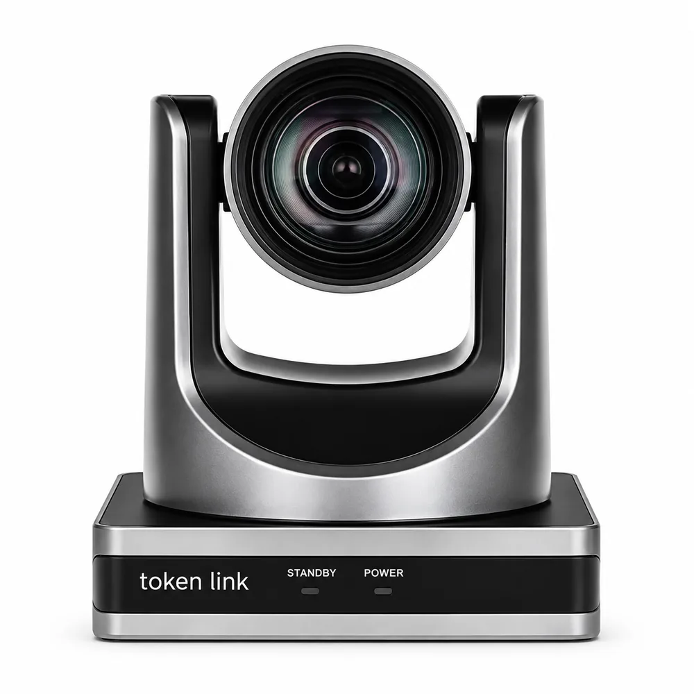

TOKEN LINK PTZ USB PRO MAX
Zoom óptico de 12X, 1080p60 por HDMI, USB 3.0 e IP, Dual Stream, protocolos RTSP, SRT e RTMP e alimentação por PoE, DC 12V ou USB 5V.
- USB 3.0 + Ethernet
- Dual Stream
- SRT / RTSP / RTMP
- VISCA / Pelco
- Redução de ruído 2D/3D
- Controle remoto IR
- Zoom óptico
- 12X
- Resolução máxima
- 1080p60
- Saídas
- HDMI + USB 3.0 + IP
- Alimentação
- PoE, 12V ou USB 5V
Sobre a câmera
A TOKEN LINK PTZ USB PRO MAX é uma solução profissional para videoconferências, transmissões ao vivo, gravações e aplicações corporativas que exigem qualidade de imagem, flexibilidade de conexão e facilidade de operação.
Com resolução de até 1080p60, zoom óptico de 12x, conectividade USB 3.0 e Ethernet e suporte a múltiplos protocolos de transmissão e controle, a câmera oferece recursos avançados para diferentes ambientes profissionais.
Principais recursos
- Resolução: até 1080p60 via HDMI ou USB 3.0
- Zoom óptico: 12x · zoom digital: até 16x
- Ângulo de visão: 72,5°
- Conectividade: USB 3.0 e Ethernet
- Transmissão IP: suporte a múltiplos fluxos simultâneos
- Dual Stream: MJPEG e H.264
- Controle: VISCA, Pelco-D, Pelco-P e TCP/IP
- Streaming: RTSP, SRT e RTMP
- Alimentação: PoE, DC 12V e USB 5V
- Controle remoto: infravermelho (IR)
Protocolos e controle
A câmera oferece ampla compatibilidade com protocolos profissionais de controle e transmissão. Suporta VISCA, Pelco-D, Pelco-P e TCP/IP, permitindo integração com diferentes sistemas de automação e controle de câmeras PTZ.
Para transmissão de vídeo pela rede, tem suporte aos protocolos RTSP, SRT e RTMP, ampliando as possibilidades em streaming, produção audiovisual e videoconferência. Acompanha ainda um controle remoto IR, que permite controlar funções da câmera e acessar posições predefinidas (presets) de forma prática.
Lente e qualidade de imagem
Equipada com lente grande angular de 72,5° de campo de visão, a câmera cobre amplamente o ambiente e permite enquadramentos mais fechados por meio do zoom. O zoom óptico de 12x, combinado ao zoom digital de até 16x, permite close-ups e captura de detalhes mesmo a maiores distâncias.
O sensor CMOS com alta relação sinal-ruído (SNR) contribui para uma melhor qualidade de imagem em ambientes com pouca iluminação, e as tecnologias de redução de ruído 2D e 3D ajudam a obter imagens mais limpas.
Conectividade e transmissão
Pela conexão USB 3.0, a câmera funciona como dispositivo UVC e permite transmissão de vídeo de até 1080p60, facilitando o uso com computadores, sistemas de videoconferência e plataformas de streaming compatíveis. A conexão Ethernet permite integração com redes IP e o uso de múltiplos fluxos de vídeo simultâneos.
No modo IP, a câmera suporta Dual Stream, com um fluxo de até 1080p60 e outro de até 720p30, conforme a configuração e a aplicação. É possível ainda obter saída de vídeo 1080p simultaneamente pelo HDMI e pelo USB 3.0.
Dual Stream
A tecnologia Dual Stream permite trabalhar com dois fluxos de vídeo simultâneos, com mais flexibilidade para diferentes necessidades de transmissão e distribuição de conteúdo. A câmera suporta os formatos MJPEG e H.264, permitindo adequar a transmissão à aplicação e usar de forma mais eficiente os recursos de processamento e rede.
Alimentação
PoE (Power over Ethernet). Compatível com PoE nos padrões IEEE 802.3af/at, a câmera recebe alimentação diretamente pelo cabo Ethernet, aproveitando a infraestrutura de rede existente e reduzindo a quantidade de cabos.
DC 12V. Também aceita fonte externa DC 12V, uma alternativa quando o PoE não está disponível ou quando se deseja uma fonte dedicada.
USB 5V. Também há suporte à alimentação via USB 5V, uma opção adicional para aplicações com conexão USB.
Aplicações
- Videoconferências
- Salas de reunião
- Aulas e treinamentos
- Transmissões ao vivo
- Igrejas e auditórios
- Produção audiovisual
- Estúdios
- Eventos corporativos
- Streaming profissional
- Sistemas de monitoramento e produção por IP
Solução profissional e versátil
Combinando 1080p60, zoom óptico de 12x, conectividade USB 3.0 e Ethernet, Dual Stream, múltiplos protocolos de controle e transmissão e diferentes opções de alimentação, a câmera oferece uma solução completa e versátil para ambientes profissionais. A variedade de conexões e protocolos permite integrá-la a diferentes equipamentos e sistemas em projetos de videoconferência, streaming e produção audiovisual.
Especificações técnicas
Imagem e lente
- Sensor
- CMOS de 1/2,8″
- Formatos de vídeo
- 1080p60 via HDMI/USB · 1080p60 via IP
- Distância focal
- f = 3,5 mm ~ 42,3 mm, F1,8 ~ F2,8
- Zoom óptico
- 12X
- Ângulo de visão horizontal
- 72,5° ~ 6,09°
- Sensibilidade
- 0,5 lux
- Relação sinal/ruído
- ≥ 50 dB
- Compressão de vídeo
- H.265 / MJPEG
- Sistemas de foco
- Automático, manual, PTZ trigger, one push
- Balanço de branco
- Automático, one push e manual
- Inversão de imagem
- Sim
Movimento PTZ
- Ângulo de pan
- -170° ~ +170°
- Ângulo de tilt
- -30° ~ +90°
Protocolos e conectividade
- Protocolos suportados
- RTSP, RTMP, ONVIF, DHCP, Multicast
- Interface de controle
- RS-485, USB e RJ-45
Alimentação e físico
- Consumo
- < 12 W
- Dimensões
- 14,4 × 14,4 × 16,7 cm
- Peso
- 1.414 g
- Garantia
- 18 meses em todo o território nacional
Quer essa câmera no seu projeto?
Informe o tipo de instalação e a quantidade de câmeras e nossa equipe prepara o orçamento.
Solicitar orçamento